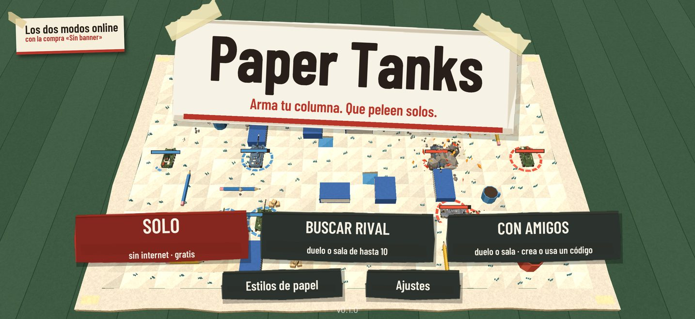
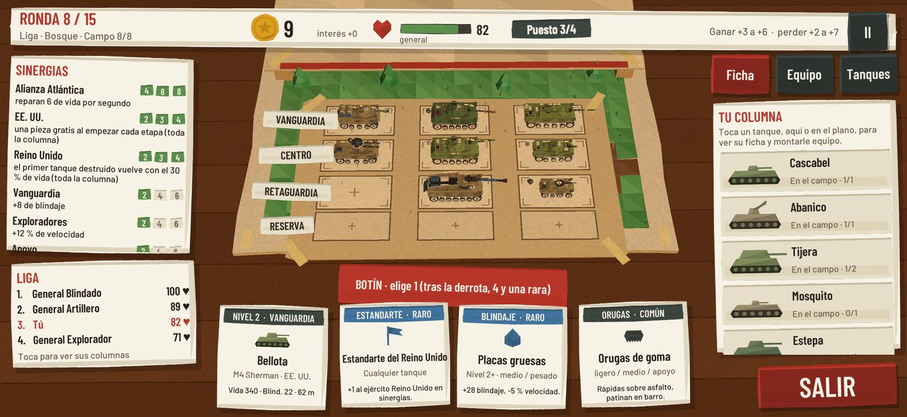
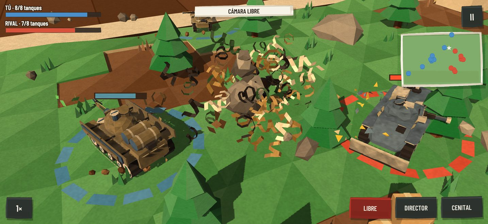
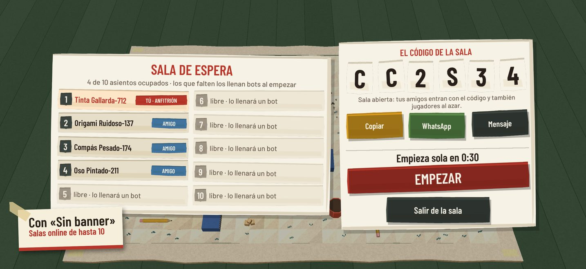
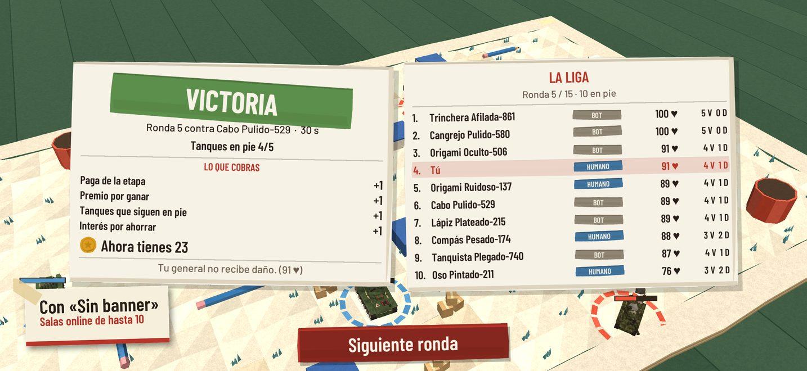
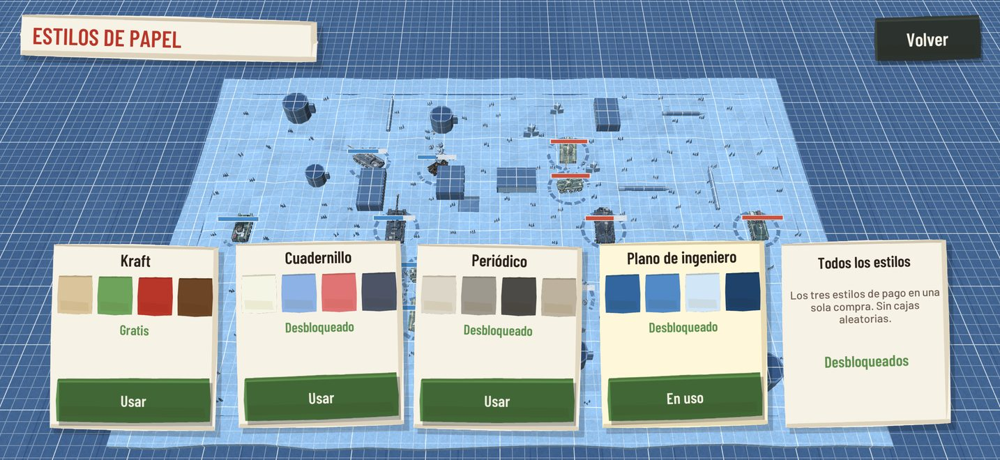

Paper Tanks
Estrategia por rondas con tanques de papel
Próximamente en la App Store · iPhone y iPad
Arma una columna de tanques de papel, equípala ronda a ronda y mírala pelear sola en un campo de cartulina. Contra generales que controla el juego o en salas online de hasta 10 jugadores. Sin cuentas.
Tres modos
Solo
Una carrera de 15 rondas contra tres generales que controla el juego. Gratis, sin internet y sin cuenta.
Buscar rival
Un duelo 1 contra 1 o una sala abierta de hasta 10 generales reales; en la sala, a los 30 segundos los asientos libres los llenan bots.
Con amigos
Crea un duelo (2 plazas) o una sala privada o abierta (2 a 10 plazas), comparte su código de 6 caracteres y empieza cuando quieras.
Los dos modos online se desbloquean con la compra única «Sin banner».
Qué hay dentro
- 24 tanques de 6 ejércitos (EE. UU., Reino Unido, URSS, Alemania, Francia y Japón), de exploradores rápidos a superpesados.
- Equipo que cambia el modelo: cañones, orugas, motores, blindajes, sistemas y estandartes; radar, cortina de humo, kit de reparación, lanzaminas y defensas activas que paran un proyectil y se rearman.
- Sinergias de ejército, de tipo y de alianza, y una economía de botín, dinero e intereses.
- Rondas contra bichos de papel: hormigas, escarabajos, arañas, avispas, ratones y, al final, el Gato.
- Un campo de papel que se pliega y tanques que, al caer, explotan en virutas de papel. 6 tableros: bosque, desierto, nieve, ciudad, barro y un escritorio.
- Estilos de papel: Kraft (gratis) y, como compras opcionales que solo cambian el aspecto, Cuadernillo, Periódico y Plano de ingeniero.
- Cámara libre, de director o cenital, seguimiento de un tanque con doble toque, velocidad 1× o 2× y tutorial en la primera partida.
- En español e inglés. Para iPhone y iPad.
Capturas






Online sin cuenta
Para jugar en sala no hace falta registrarse: el juego usa una sesión anónima y te pone un nombre inventado (adjetivo, sustantivo y número) que puedes cambiar. No hay chat ni texto libre. El plan de cada jugador queda oculto hasta que todos han terminado de prepararse, y los datos de la sala se borran solos poco después de acabar. Más en la política de privacidad.
Precio y anuncios
Paper Tanks es gratis. Muestra un banner discreto solo en los menús, un anuncio a pantalla completa al empezar una partida (mientras se prepara, con un aviso delante) y, de vez en cuando, al abrir el juego. La compra única «Sin banner» quita el banner y desbloquea los modos online; los demás anuncios se mantienen. Nada de pago da ventaja en la partida y no hay cajas aleatorias.
Preguntas rápidas
¿Necesito una cuenta?
No. Ni para jugar en solitario ni para jugar online.
¿Funciona sin internet?
El modo Solo, sí. Los modos online necesitan conexión.
¿Puedo jugar online sin otros jugadores?
Sí: los asientos que nadie ocupa los llena un bot, así que una partida entera se puede jugar sola.
¿En qué dispositivos?
iPhone y iPad (iOS), en español e inglés.